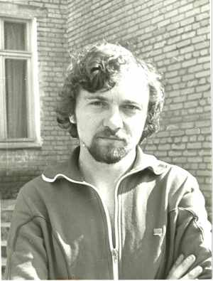
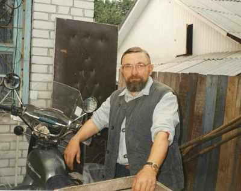

Кравчук Сергей ВладимировичРодился 20.01.1956 в д. Антошинка (Новокузьминка), Железинского р-на, Павлодарской обл., Казахстан. в 1976 переехали в Гродно (Беларусь), служил на территории ГДР, окончил юр.фак. Гродненского гос.университета, служил в милиции в г.Щучин, был преподавателем в Гродненском торговом колледже. В 1986 г. женился на Бахориной Валентине Ивановне . |

1981г.  2000г. |
|
Родители:
Братья/Сестры:
Дети: |